Collections Manager
Internal curation tool that replaced manual workflows and scaled App Market collection management across two generation modes
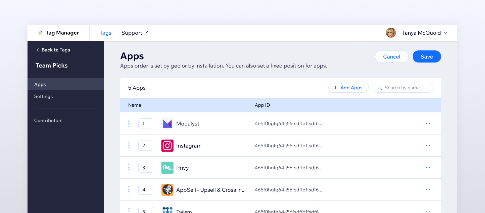
App collections power the discovery experience inside Verticals - curated groups of apps that vertical teams embed in their products. The existing tooling was limited, forcing all collection operations through the team.
I redesigned the end-to-end information architecture for an internal collections manager: a list page with search, filter, and reorder; a guided creation flow; and a detail view with tabs for apps, metadata, and contributors. The redesign introduced self-service for vertical teams and role-based access, removing a persistent operational bottleneck.
Before

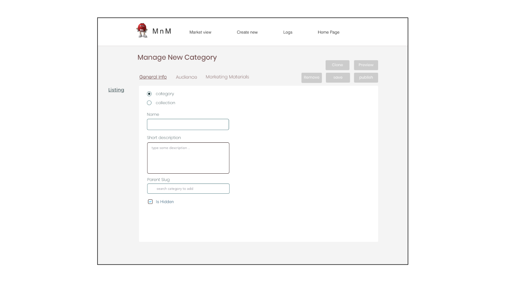
Process
Mapping the system
- Redesigned the information architecture: list page, creation flow, and collection detail with three tabs
- Supported two generation modes (manual and automated) within a single structure
Designing it
- Designed the collections list with search, filter, and reorder
- Built the creation flow (name → generation type → success state) and the detail page with apps, details, and contributors tabs
- Added view-only mode for non-contributors
Impact
The tool has been in active use by vertical teams across Wix since September 2022, replacing a manual process that required App Market team intervention for every collection operation.
Structure & scope
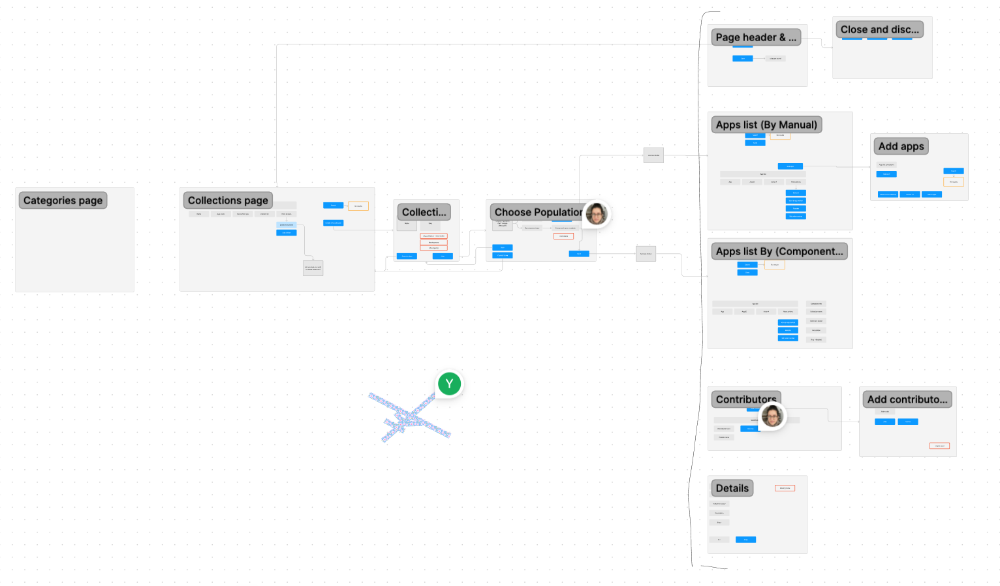
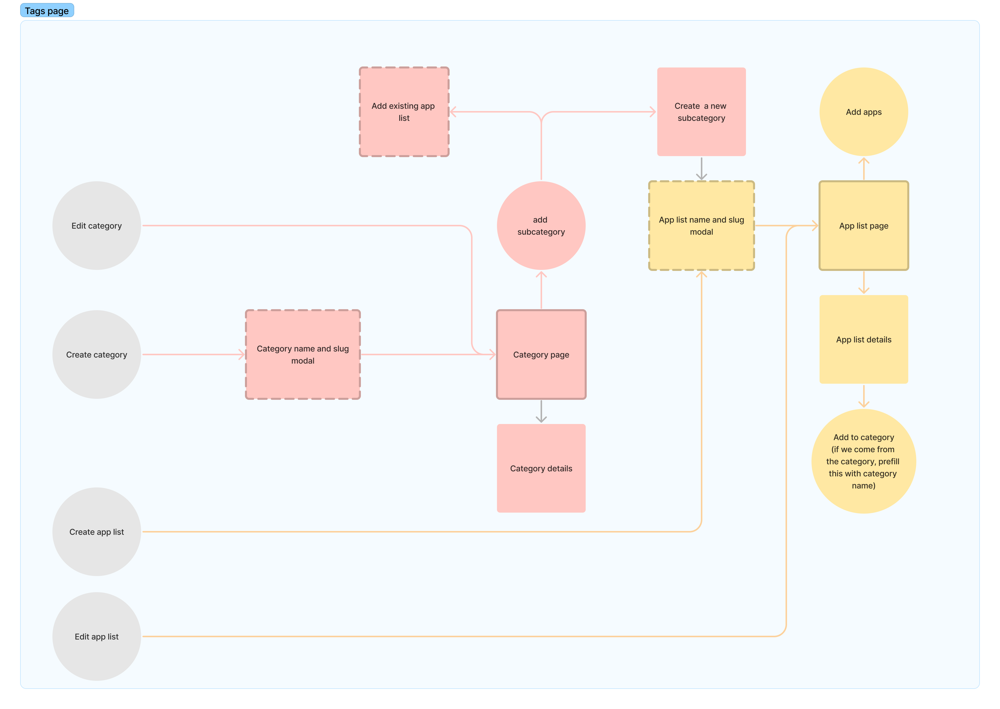
Screens
Collections list & creation

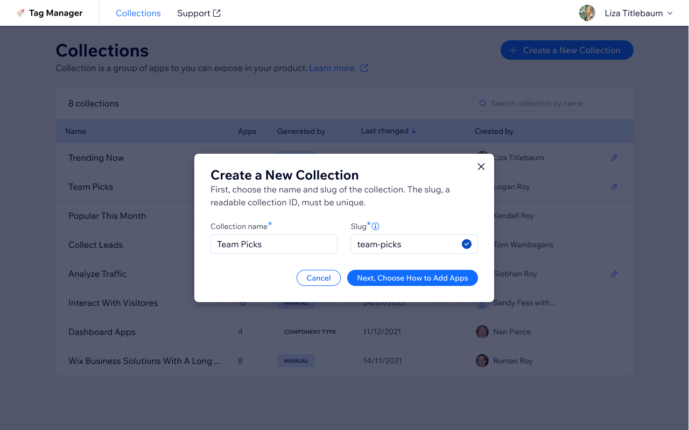

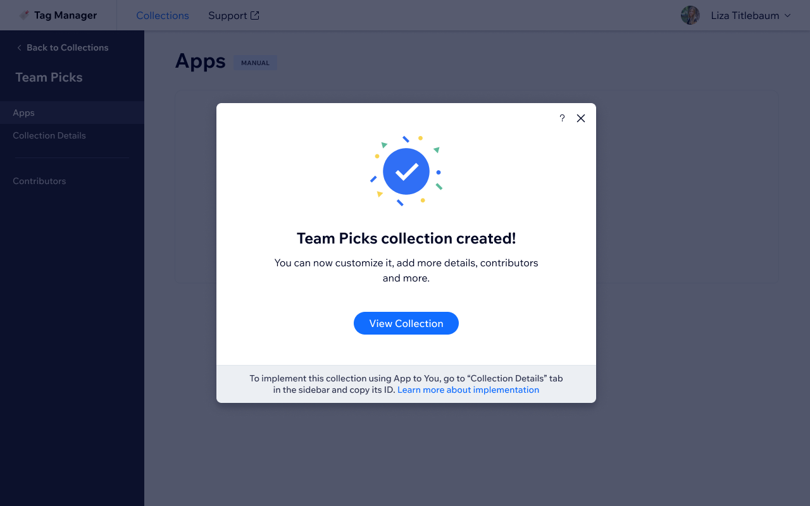
Collection detail
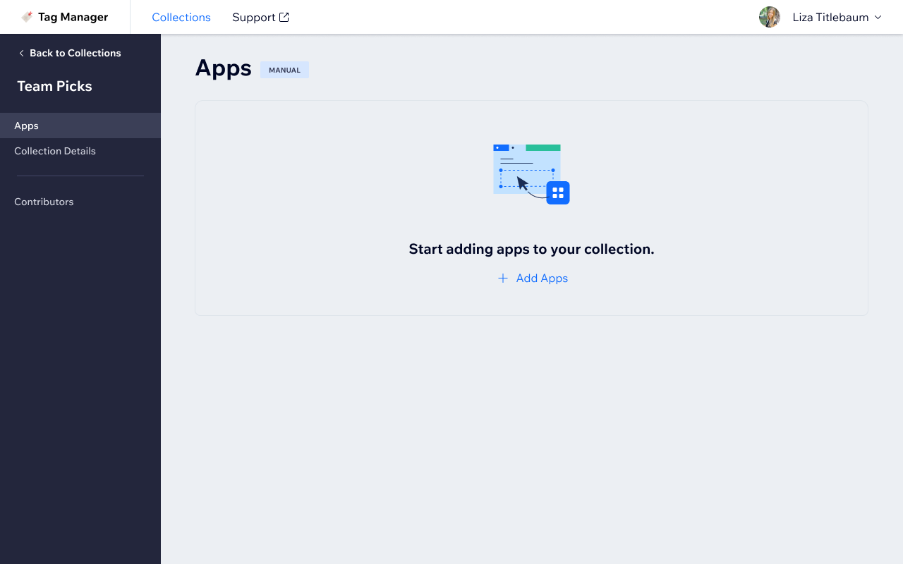
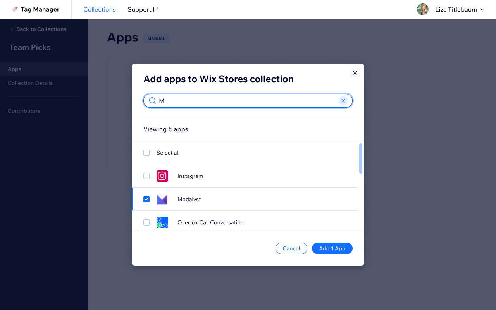
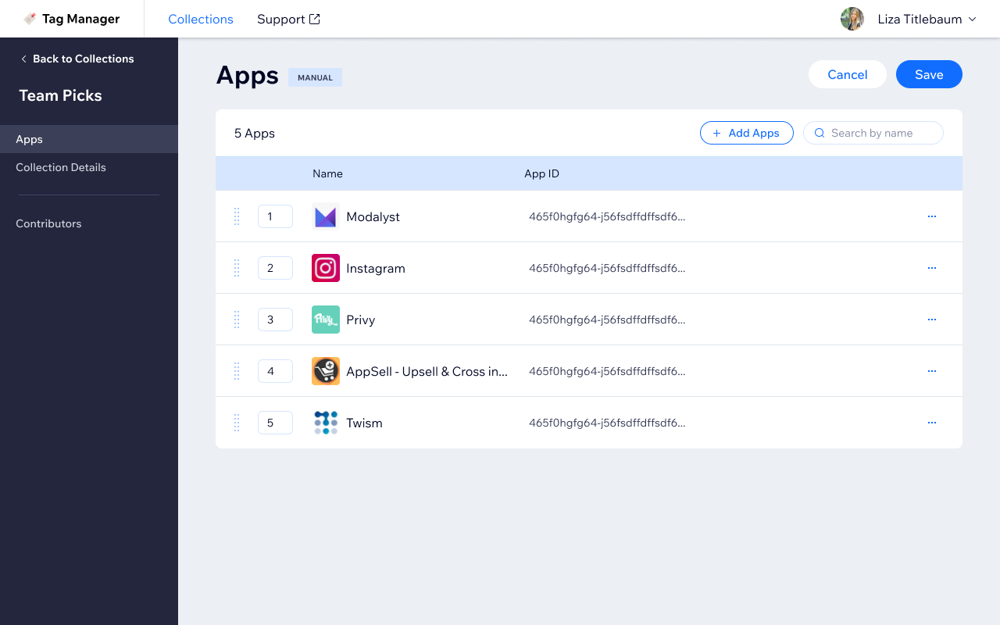
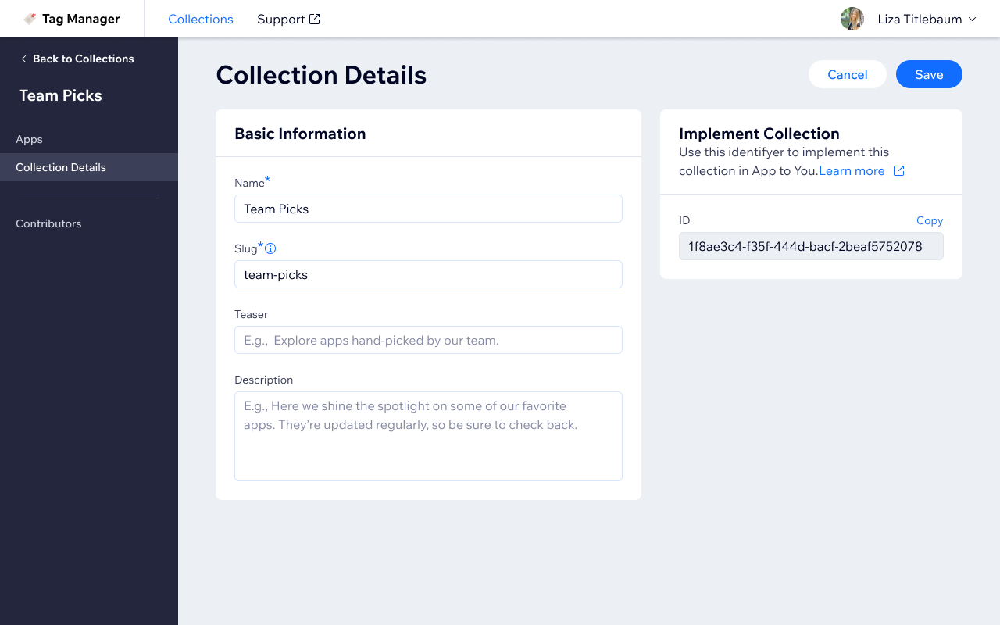
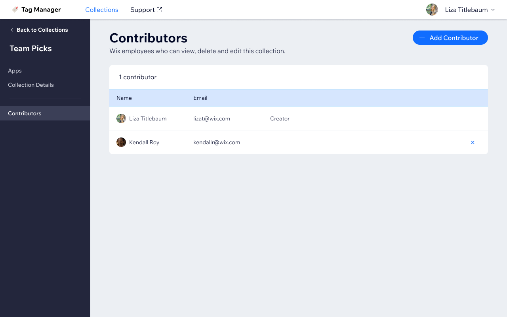
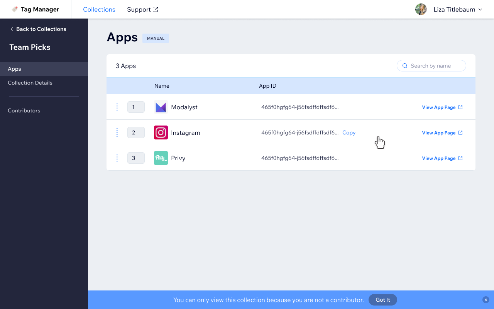
Concept
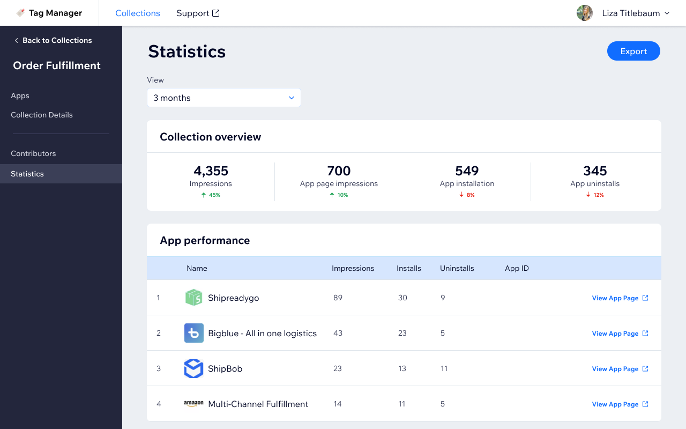
Bottom line
The internal ops team knew exactly what was broken, which made the brief unusually concrete. The tricky part was fitting two completely different generation modes, manual and automatic, into the same information architecture without making either feel bolted on. The tool replaced the spreadsheet workarounds and stuck.